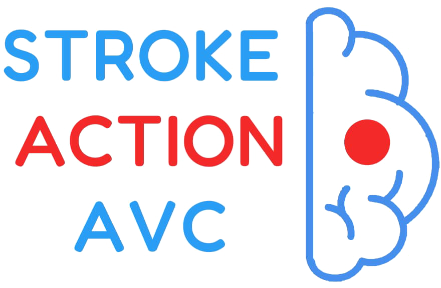
Naviguer, trouver les bons documents, orienter les visiteurs et faire vivre le site au quotidien — tout ce qu'un membre doit savoir, en quelques pages.
Le site strokeaction.org présente l'association, éduque le public sur l'AVC et permet à chacun de s'engager (adhésion, bénévolat, don, contact). C'est souvent le premier contact qu'une personne aura avec Stroke Action.
Qui nous sommes, notre mission, nos 5 programmes et notre bureau exécutif.
Reconnaître un AVC avec la méthode FAST, facteurs de risque, chiffres clés.
Devenir membre ou bénévole, faire un don, nous écrire.
Toutes les pages sont accessibles depuis le menu en haut de l'écran, organisé en 4 rubriques. Cliquez sur une rubrique pour dérouler ses pages.
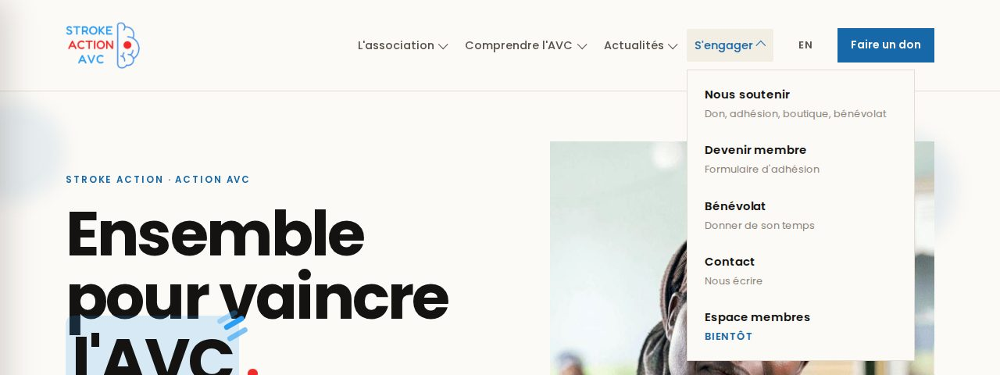
Le site s'ouvre en anglais par défaut. Pour passer en français, cliquez sur FR en haut à droite (le bouton affiche EN quand vous êtes déjà en français). Les adresses changent en conséquence :
strokeaction.org/fr/… français
strokeaction.org/en/… anglais
Le menu est regroupé derrière l'icône ☰ en haut à droite. Touchez une rubrique pour la déplier.
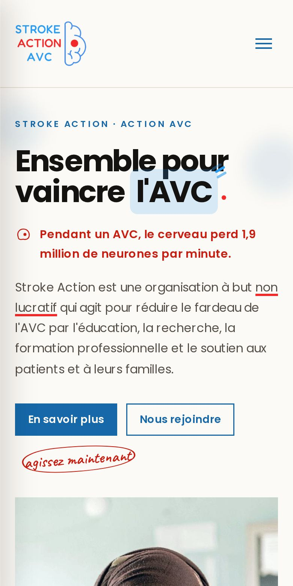
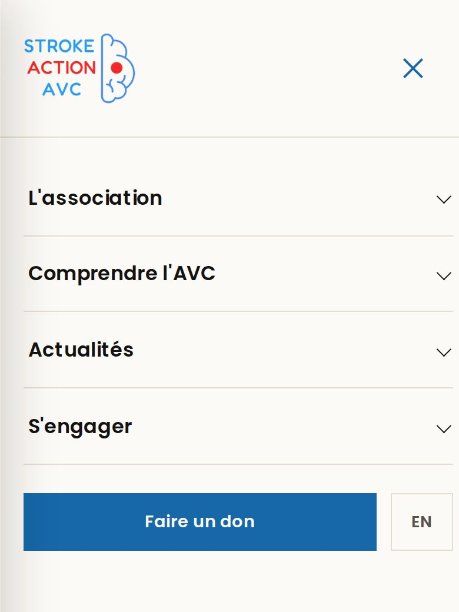
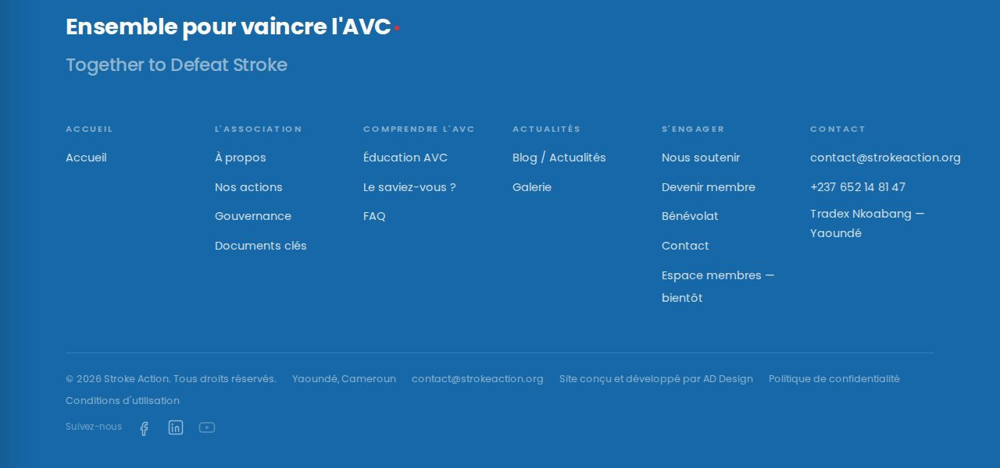
En bas de chaque page, le pied de page bleu reprend tous les liens du site, les coordonnées, les documents légaux (confidentialité, conditions d'utilisation) et nos réseaux sociaux (Facebook, LinkedIn, YouTube).
À la première visite, un bandeau apparaît en bas de l'écran. Cliquez sur Accepter ou Refuser : le site fonctionne dans les deux cas.
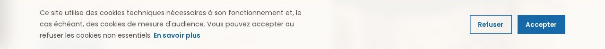
| Rubrique | Page | Ce qu'on y trouve |
|---|---|---|
| — | Accueil | Présentation, 4 piliers, méthode FAST, chiffres clés, appel à nous rejoindre. |
| L'association | À propos | Histoire, vision, mission, valeurs, mot du fondateur. |
| Nos actions | Les 5 programmes (éducation, recherche, formation, soutien aux patients, implication du public). | |
| Gouvernance | Les 5 membres du bureau exécutif, biographies et e-mails. | |
| Documents clés | Statuts, règlement intérieur (PDF à télécharger). | |
| Comprendre l'AVC | Éducation AVC | Qu'est-ce qu'un AVC, FAST, facteurs de risque, « Le saviez-vous ? », livre du Dr Kamtchum. |
| FAQ | 10 questions fréquentes, avec réponses dépliables. | |
| Actualités | Blog / Actualités | Articles, campagnes, événements ; inscription à la newsletter. |
| Galerie | Photos des activités (en préparation). | |
| S'engager | Nous soutenir | Don, adhésion, boutique, bénévolat. |
| Contact | Coordonnées et formulaire de contact. | |
| Espace membres | Réservé aux membres — bientôt |
Ce sont les pages vers lesquelles vous orienterez le plus souvent les personnes qui vous posent des questions.
Menu › Comprendre l'AVC › Éducation AVC. Le cœur de notre mission de sensibilisation : la méthode FAST, les facteurs de risque (modifiables ou non), les chiffres clés et la section « Le saviez-vous ? ».
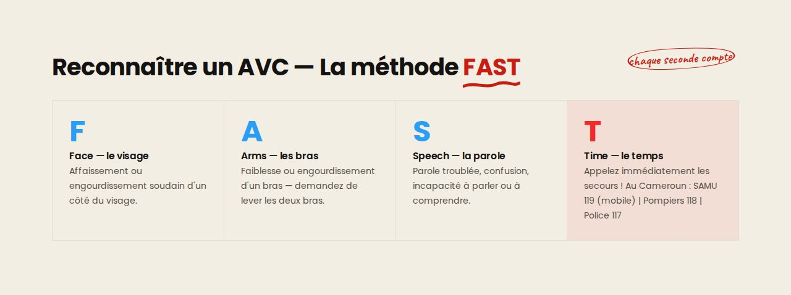
Menu › L'association › Gouvernance. Présente les 5 membres du bureau exécutif : rôle, courte bio et adresse e-mail. Cliquez sur « Voir plus » pour lire la biographie complète.
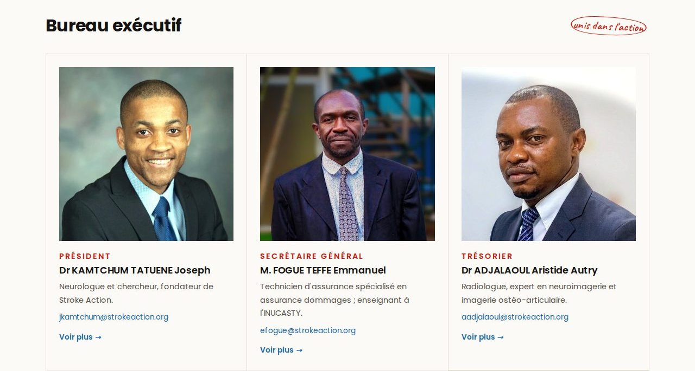
Menu › L'association › Documents clés. Cliquez sur la ligne d'un document pour ouvrir / télécharger le PDF. Les documents grisés portent la mention « Bientôt ».
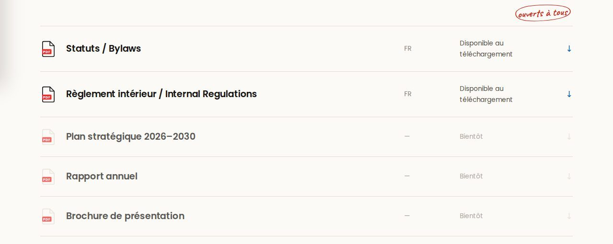
Menu › Comprendre l'AVC › FAQ. Cliquez sur une question pour afficher sa réponse. Couvre : adhésion, paiement de la cotisation, assemblées générales, partenariats avec les professionnels de santé…
Notre histoire (fondée sous la loi n° 90-53), la vision, la mission et nos 4 valeurs : compassion, dévouement, intégrité, professionnalisme.
Les 5 programmes : éducation du public, recherche, formation professionnelle, soutien aux patients, implication du public.
Articles mensuels, campagnes (29 octobre), événements et photos. Inscription à la newsletter en bas de la page Actualités.
Tout se passe sur la page Nous soutenir (Menu › S'engager). Chaque bouton ouvre un volet latéral qui explique la démarche.
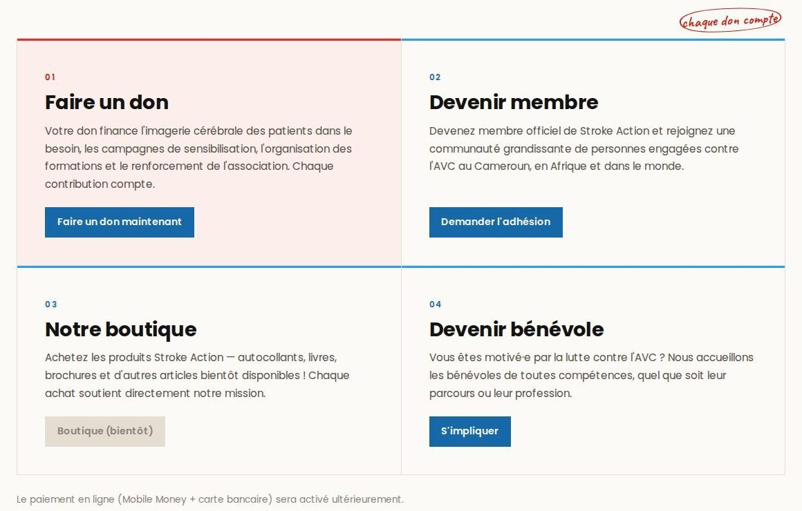
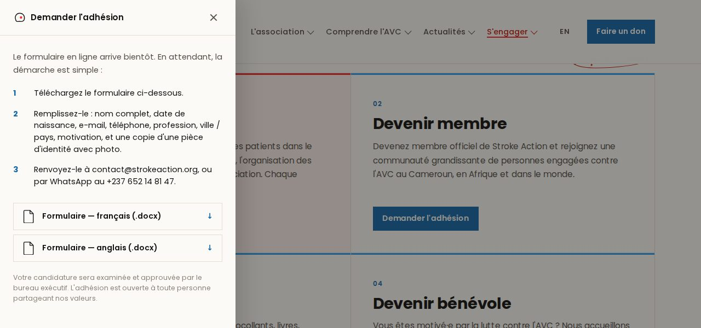
| Action | Statut actuel | Que dire aux personnes intéressées |
|---|---|---|
| Faire un don | bientôt en ligne | Le paiement en ligne (Mobile Money + carte) arrive. En attendant : nous écrire, on les accompagne. |
| Adhésion / bénévolat | disponible | Formulaire à télécharger puis à renvoyer (étapes ci-dessus). |
| Boutique | bientôt | Autocollants, livres, brochures bientôt disponibles. |
La page Contact (Menu › S'engager › Contact) réunit nos coordonnées et un formulaire. Chaque message envoyé arrive directement dans la boîte contact@strokeaction.org.
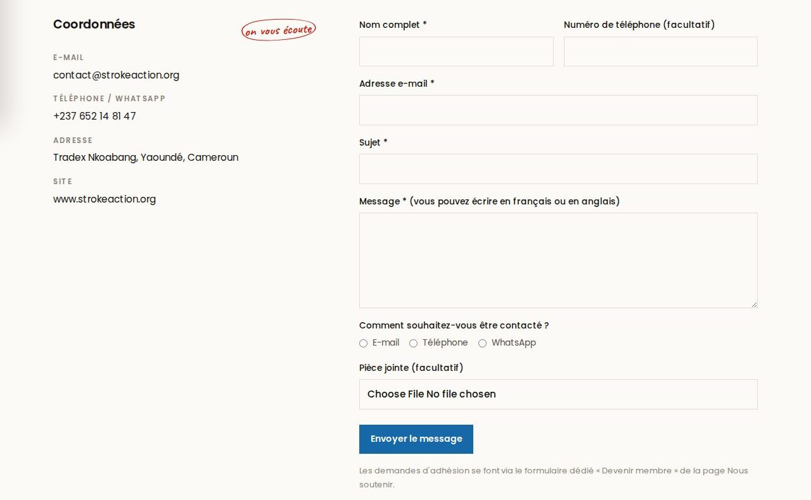
Le message peut être écrit en français ou en anglais.
Chaque membre est un ambassadeur du site. Voici comment orienter rapidement les personnes selon leur demande.
| Quelqu'un vous dit… | Envoyez-lui ce lien |
|---|---|
| « Je veux devenir membre. » | strokeaction.org/fr/nous-soutenir#devenir-membre |
| « Je veux aider / être bénévole. » | strokeaction.org/fr/nous-soutenir#benevolat |
| « Comment reconnaître un AVC ? » | strokeaction.org/fr/education-avc |
| « Qui dirige l'association ? » | strokeaction.org/fr/gouvernance |
| « Je veux lire vos statuts. » | strokeaction.org/fr/documents-cles |
| « Comment payer ma cotisation ? » | strokeaction.org/fr/faq |
| « Je suis médecin, je veux collaborer. » | strokeaction.org/fr/contact |
| « Je veux faire un don. » | strokeaction.org/fr/contact (en attendant le paiement en ligne) |
Pour un anglophone, remplacez simplement /fr/ par /en/.
Le site s'enrichit grâce à vous. Envoyez à l'équipe du site :
| Fonctionnalité | Ce que ça apportera |
|---|---|
| Espace membres | Documents internes, convocations aux assemblées, suivi de cotisation. |
| Don en ligne | Paiement sécurisé par Mobile Money et carte bancaire. |
| Adhésion en ligne | Formulaire à remplir directement sur le site (plus besoin du .docx). |
| Boutique | Autocollants, livres, brochures. |
| Documents | Plan stratégique 2026–2030, rapport annuel, brochure de présentation. |
| Galerie & articles | Photos des activités et articles mensuels. |
| Livre du Dr Kamtchum | « Tout savoir sur l'AVC », FR & EN, à partir du 1er octobre 2026. |
| Problème | Solution |
|---|---|
| Le site s'affiche en anglais | Cliquer sur FR en haut à droite, ou utiliser un lien en /fr/. |
| Je ne trouve pas le menu (mobile) | Toucher l'icône ☰ en haut à droite de l'écran. |
| Le formulaire affiche une erreur | Vérifier les champs * et la pièce jointe (≤ 5 Mo) ; sinon écrire à contact@strokeaction.org. |
| Un document ne s'ouvre pas | Installer / mettre à jour un lecteur PDF ; les formulaires d'adhésion sont au format Word (.docx). |
| Une information est erronée ou périmée | La signaler à l'équipe du site (voir ci-dessous) avec la page concernée et une capture d'écran. |
| Le bandeau cookies revient | Normal en navigation privée ou après effacement des données du navigateur. |
✉ contact@strokeaction.org
☎ / WhatsApp : +237 652 14 81 47
📍 Tradex Nkoabang, Yaoundé, Cameroun
Écrire à contact@strokeaction.org avec l'objet « Site web — correction », en précisant la page, la langue (FR/EN) et ce qui doit changer. La demande est transmise à AD Design, qui gère le site.